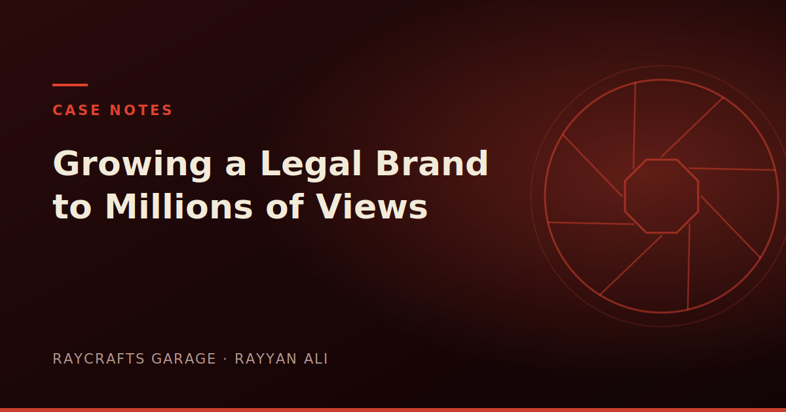

How I Grew a Legal Brand From Zero to Millions of Views
When I started building the content engine for a legal brand, there was no audience, no format, and no proof that short-form even worked in a category as dry as wills and estate planning. A few months later the numbers told a different story.
Trust is the whole product
In legal, people are not buying a video, they are deciding whether to trust you with something they would rather not think about. That reframed every creative choice: clarity over cleverness, calm over hype, and a face people could believe.
Find the format, then repeat it
Growth did not come from constant reinvention. It came from finding a handful of formats that consistently earned attention and then running them until the data said stop. Consistency compounds in a way that novelty rarely does.
What I would do differently
I would commit to a posting rhythm sooner and resist the urge to over-produce early videos. Volume and iteration taught me more than any single polished piece ever did.
Draft, this is starter copy for the page. Replace with the full article; aim for 600+ words to strengthen search ranking.